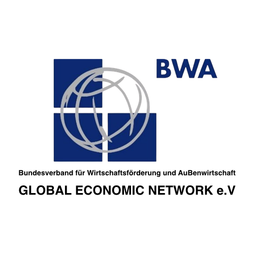
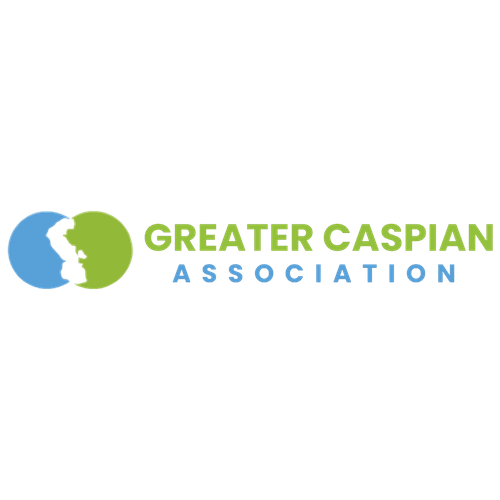
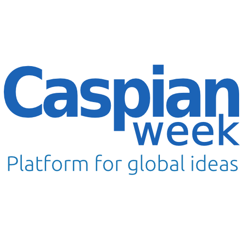
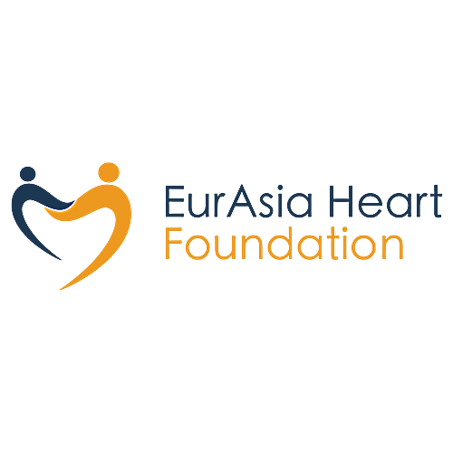

通往里海及周边区域的门户：
真正的增长所在
我们覆盖里海地区、高加索、中亚、东欧及黑海沿岸市场进入与运营的每一个环节，包括战略规划、法律架构、本地落地、合作伙伴及合规管理。您只需对接我们一家机构，无需协调十个不同的承包商。
8.4万亿美元的认知盲区：泛里海地区是全球最被低估的市场
大多数西方战略视角中的世界地图，在欧洲与中国之间仿佛存在一片空白。
而我们将这片区域称为蕴藏巨大潜力的“认知盲区”。
GCR 不仅仅是一个过境枢纽，更是一个正在重塑自身定位的独立经济板块。
联系我们 ›2025年中亚地区经济增长6.6%，约为多数西欧经济体增速的四倍。当竞争对手在饱和市场中争夺微薄份额时，里海地区、高加索、中亚、东欧及黑海沿岸凭借其资源、地理优势及加速增长的内部需求，提供了结构性的增长机会。抢占先机的窗口期已经打开，不会一直敞开。

现实检验：
在这里，电子表格行不通
里海地区、高加索、中亚、东欧及黑海沿岸这片区域，只有真正理解其运行逻辑的人才能获得丰厚回报。在这个市场，强有力的人脉关系能带来结果、打开大门，而如果仅靠资本硬闯，往往会在冗长的合规流程中耗费数年时间。这里的成功之道在于本地化深耕，建立信任，并跳出西方标准的常规做法，因地制宜。
主要难点
监管碎片化
18个国家意味着18套不同的法律体系、税法和文化惯例。在一国行之有效的做法，换到另一国可能就是致命错误。
制度环境不透明
正式流程背后，往往还存在一套非正式的协调机制。没有熟悉当地环境的引导者，你看到的只是表面，真正的决策过程往往隐藏在背后。
“有毒合作伙伴”的风险
这个地区从不缺少夸下海口、承诺巨大利益的人。一旦在合作伙伴选择上判断失误，损失的不只是资金，还有声誉。
我们的价值主张
我们置身于这片环境之中运作，而非从外部绕行。我们的职责是让这片复杂的区域变得清晰可行，完全合规，不走捷径，并向您的总部建立清晰的问责路径。
我们的专长领域：
聚焦高增长赛道
我们看重的是专业深度，而不是覆盖面的广度。我们专注于那些能够最大化释放区域资源与西方技术协同效应的行业。
关键矿产与采矿
全球资源竞争已使这一地区成为欧盟和美国的战略重点。
机会方向：勘探许可、储量向 GKZ/JORC 标准转化，以及符合 ESG 标准的采矿和加工基础设施建设。
石油、天然气与现代化升级
该行业正经历深度更新，重点已转向下游深加工和开采环节的技术效率提升。
机会方向：成熟油气田优化、甲烷减排技术、高端油田服务，以及 PSA 框架下的风险与复杂性管理。
能源转型与清洁技术
GCR 不仅仅意味着石油，也有望成为未来绿色氢能和风力发电的重要枢纽。
机会方向：脱碳技术转移、电网现代化、ESG 咨询以及可再生能源项目。
物流与贸易通道
欧亚大陆的贸易流向正在演变，该区域正成为连接中间走廊、一带一路等主要通道的关键枢纽。
机会方向：物流数字化、基础设施项目、仓储和枢纽建设，以及供应链管理。
科技、金融科技与数字化
区域内各国正大力投资于政府科技与数字经济。
机会方向：B2G 解决方案、金融科技平台、网络安全，以及面向快速成长型中小企业的 SaaS 输出。
工业制造与农业科技
通过推动本地化生产，降低进口依赖并保障粮食安全。
机会方向：设备供应、农业技术合作，以及在经济特区设立合资企业。
高层级准入与合作网络
与行业及政府领导者合作




GCR 部署团队：
您的区域运营边界，无需承担前期搭建成本
开设办公室通常需要数月时间，而我们的部署团队在数天内即可完成组建。
GCR 部署团队是您在该地区可直接启用的现成运营架构，自第一天起即可投入运行，并可先在我们的法律主体下运作，直至您准备好自行接手。
我们替您把事情跑起来，您无需亲自下场处理
运营支持
开票、报关、末端物流等事务，均可通过我们的法律架构执行，并始终以您的业务利益为导向。
本地在场能力
由我们团队中经过筛选的代表为您提供现场支持，在会议、政府部门及项目现场充当您的耳目与延伸。
法律与人力资源保障
我们可作为您本地团队的名义雇主，处理薪资发放、税务和合规事项，您无需先行设立本地公司。
流程路径
合作结束时，您可以选择全面接手我们为您搭建的运营体系；如果决定不再继续，我们也可协助您有序退出，且无需由您承担清算程序。
与我们合作的实际路径
每一个阶段的设计，都是为了在您真正投入资金之前先降低风险。
一次做一个决策，不盲目，也不仓促。
从哪里开始？
取决于您的情况：
这里真的有市场吗？
我们负责：市场扫描、监管审查、合作伙伴尽职调查
您负责
提供一份简要说明，并参加一次半天的战略讨论
您获得
一份可直接提交董事会的进入/不进入决策报告。
搭建正确架构
我们负责：公司架构设计、税务架构安排、许可申请和选址支持
您负责
与法务和财务团队共同确认架构方案
您获得
在团队正式进场之前，即完成实体注册、银行账户开立及相关许可激活。
开始运营
我们负责：部署区域团队、启动销售渠道、开启首轮合作伙伴接触
您负责
批准关键岗位人选，并审阅每周进展更新
您获得
在无需亲自进驻当地的情况下，实现首批收入或首批出货。
实现长期掌控
我们负责：董事会层级治理、知识产权保护、合规审计及并购执行
您负责
仅作出战略决策，其余执行工作由我们处理
您获得
一项在您所有权下独立运行、治理完善的 GCR 资产。
不确定性代价高昂，而清晰判断只需一通电话。